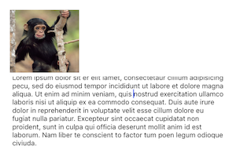
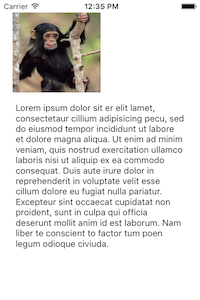
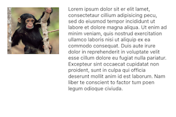

Duration
15 minutes
Lab Goals
The goal of this lab is to work with constraints in code. To demonstrate this, we will update designer created constraints when the device's orientation changes. This will allow our application to make more effective use of the available screen space.
Required assets
You can use your project from the previous exercise, or use the completed project in the Exercise 1 folder.
UILabel added at the end before continuing with this exercise.
Steps
Name the Constraints on the Text View
Our goal is to make more effective use of our screen space by updating the constraints on the UITextView. Specifically, we're going to change the leading and top edge constraints.
- Start by running the application in the simulator or on a device.
- Rotate the device and notice how the text remains on the bottom of the image - the constraints are properly keeping things positioned, but what if we want the text to move to the right side of the image?
|  |
- Open the MainStoryboard.storyboard file.
- Click on the Text View which is displaying the text in the designer to select it
- On the Properties Tab, select Layout.
- Select the Leading Space constraint, it should say "Leading Space to:" - notice the constraint is also highlighted in the design surface when selected.
- Edit the constraint and set the Name to constLeftText.
- Repeat the steps above but this time select the top edge constraint. It will specify "Top Space to: Image View ...".
- Name the Top Edge constraints constTopText.
Create the helper method GetConstraint
We're now going to start working in the code behind. To simplify some of the steps we'll use a helper method. This method will allow us to create a new constraint based upon an existing constraint.
We will use named parameters to simplify the calling code and C# nullable types to pass in optional floating point values.
- Open ViewController.cs.
-
Add the method in the code block below.
- It takes an existing constraint - either the top or leading space constraint we named.
- It takes optional new values to assign to the first object + attribute, relationship, second object + attribute, multiplier and constant.
- Using the parameters, it creates a new constraint using
NSLayoutConstraint.Createand returns it to the caller. If a parameter is not supplied (passed asnull, then it uses the current value of the existing constraint. - You may need to add the Foundation namespace.
//helper method to create constraints based on existing constraints
NSLayoutConstraint GetConstraint (
NSLayoutConstraint constraint,
NSObject object1 = null,
NSLayoutAttribute? attribute1 = null,
NSLayoutRelation? relation = null,
NSObject object2 = null,
NSLayoutAttribute? attribute2 = null,
nfloat? multiplier = null,
nfloat? constant = null)
{
if (constraint == null)
return null;
return NSLayoutConstraint.Create(
object1 ?? constraint.FirstItem,
(attribute1 == null) ? constraint.FirstAttribute : attribute1.Value,
(relation == null) ? constraint.Relation : relation.Value,
object2 ?? constraint.SecondItem,
(attribute2 == null) ? constraint.SecondAttribute : attribute2.Value,
(multiplier == null) ? constraint.Multiplier : multiplier.Value,
(constant == null) ? constraint.Constant : constant.Value);
}
Handle Orientation Changes
Now we'll add code to respond to orientation changes.
- Override the
WillRotatemethod. - Create a new method called
SetOrientationthat accepts aboolindicating orientation, we will passtrueif the orientation is Landscape. - Call your new
SetOrientationfrom theWillRotatemethod and pass the boolean by evaluating thetoInterfaceOrientationparameter.
Update the Edge Constraints on the Text View
In the SetOrientation method you just created, you're going to check if we're changing to landscape or portrait, and in response, update the constraints as necessary. To to do this, we'll need to remove the old constraints, create new constraints for what we want to change, and add it to the root View. We'll start with the Leading constraint.
- Remove the constLeftText constraint using the
RemoveConstraintmethod on the parent view (this.View) - Create a new constraint and pass in the object2 parameter:
- if we're in landscape pass in the imgMonkey.
- otherwise pass it the root View property.
NSLayoutAttribute.Trailingfor landscape andNSLayoutAttribute.Leadingfor portrait. - Add the new constraint to the root
View. -
Repeat the above steps for the Top constraint but in this case, swap the views used for the object2 parameter (e.g. imgMonkey should be used in portrait). Pass in
NSLayoutAttribute.Topfor landscape andNSLayoutAttribute.Bottomas the attribute2 parameter for portrait.
- Run the app again and try rotating the device to see the new constraints in action.
|  |  |
Summary
In this exercise, we created and replaced constraints programmatically to respond to device orientation changes.